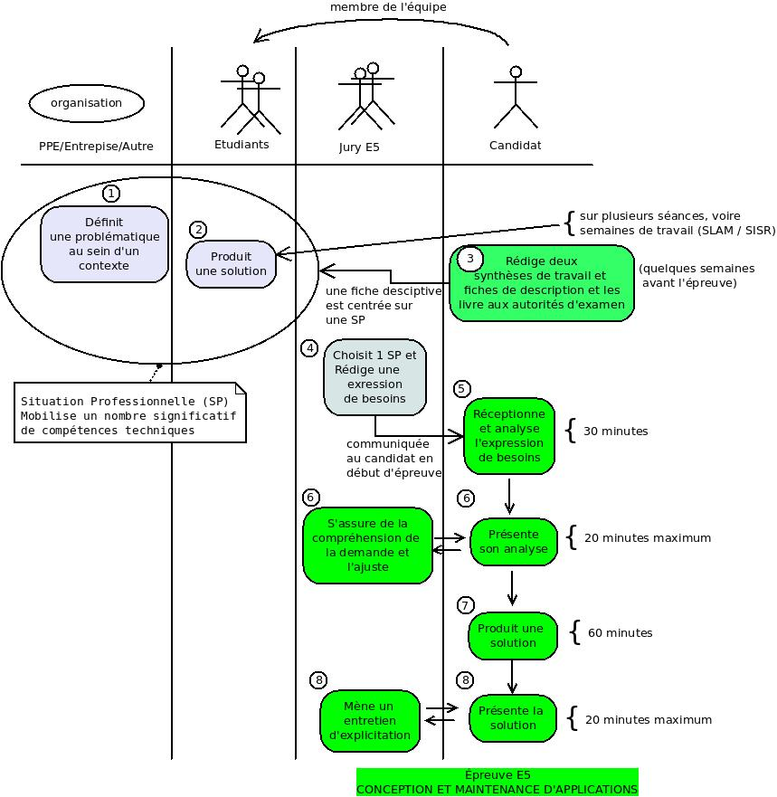

E5 en CCF
Épreuve pratique et orale – Coefficient 4
Objectif
Cette épreuve vise à évaluer chez la personne candidate l’acquisition des compétences décrites dans le bloc de compétences « Conception et développement d’applications » propre à l’option «Solutions logicielles et applications métiers», à savoir :
-
concevoir et développer une solution applicative ;
-
assurer la maintenance corrective ou évolutive d’une solution applicative ;
-
gérer les données.
Assurer la maintenance corrective ou évolutive d’une solution applicative
-
Capacité à interagir avec un existant (remarque : c’est le cas avec les frameworks)
-
Analyser et corriger un dysfonctionnement
-
Élaborer et réaliser des tests
-
Documentation technique et fonctionnelle
Critères d’évaluation
Les critères d’évaluation correspondent aux critères de performance exprimés pour chaque compétence du bloc « Conception et développement d’applications » propre à l’option « Solutions logicielles et applications métiers » figurant dans le référentiel de certification.
Modalités d’évaluation
Cette épreuve est pratique, elle se déroule sous forme ponctuelle et en contrôle en cours de formation.
L’épreuve prend appui sur deux réalisations professionnelles composant le dossier remis par la personne candidate.
Ces réalisations professionnelles mobilisent les ressources décrites dans le référentiel de certification pour le bloc « Conception et développement d’applications » et ont été élaborées dans un environnement technologique conforme à l’annexe II.E. La commission d’évaluation dispose d’un dossier remis par la personne candidate. Un temps de préparation de l’épreuve par les membres de la commission doit leur permettre de prendre connaissance du dossier et de préparer les éléments de l’interrogation. La mise à disposition du dossier est définie par la circulaire nationale d’organisation et selon les modalités fixées par les autorités académiques.
La commission d’évaluation choisit une des deux réalisations pour laquelle elle va établir une expression de besoins que la personne candidate doit traiter.
L’expression des besoins remise au candidat est rédigée préalablement par la commission à partir de l’une des situations professionnelles présentes dans le dossier. Elle est définie par :
-
les spécifications fonctionnelles de la production attendue (au besoin illustrées par des schémas, diagrammes ou encore images écran) ;
-
éventuellement la nature de la documentation professionnelle à présenter à l’appui de la solution (rapport de test, documentation technique, rapport d’incident, etc.).
Chaque réalisation professionnelle a été construite au cours de la formation. Les deux réalisations présentées doivent, dans leur ensemble, mobiliser toutes les compétences du bloc.
Contenu du dossier
Le dossier est constitué :
-
D’une page de garde : Page de garde E5
-
Des fiches descriptives des deux réalisations professionnelles intégrant les modalités d’accès aux éléments techniques. Ces fiches sont décrites à l’aide du modèle de fiche présenté dans la circulaire nationale d’organisation.
Une fiche présente des éléments constitutifs de la réalisation professionnelle mise en œuvre par la personne candidate : finalité et contexte de la situation professionnelle, description des ressources matérielles et logicielles utilisées, schémas explicatifs et toute documentation utile à la compréhension du travail réalisé et des résultats obtenus.
Choix des situations professionnelles
La présence au minimum d’une situation professionnelle réalisée en cours de formation (back-end ou front-end)
Possibilité de proposer une situation professionnelle (SPExtra) réalisée hors contexte introduit par les équipes pédagogiques, à condition que celle-ci ait été validée par vos professeurs.
La SPExtra doit être une situation professionnelle qui s’intègre dans un projet, avec une finalité clairement identifiée (projet personnel, projet réalisé en période de stage)
⇒ le candidat doit alors présenter le contexte organisationnel et les structures technologiques à partir desquels la SPExtra s’appuie.
Le contexte technologique de la SPExtra fait au minimum usage d’un framework applicatif, et de préférences, d’une gestion de versions et d’un outil de travail collaboratif.
Le contexte technologique de la SPExtra est transposable dans le contexte technologique support des AP (salle C415 ou C416), dans le respect des règles de confidentialité liant le candidat à l’organisation d’accueil.
Organisation de l’épreuve
L’usage de l’environnement de travail est placé sous la seule responsabilité de la personne candidate, dans le respect des consignes de sécurité, de sauvegarde des données et des ressources utilisées. Voir schéma ci-après.

Date butoir de remise des dossiers
Votre dossier est constitué d’une chemise de couleur bleue, avec ce modèle de page de couverture et comportant le descriptif de vos deux situations professionnelles.
À déposer au plus tard le mercredi 05 avril 2023.
Annexes
Exemples de fiches descriptives :
-
Fiche recto - Fiche verso et une Expression des besoins